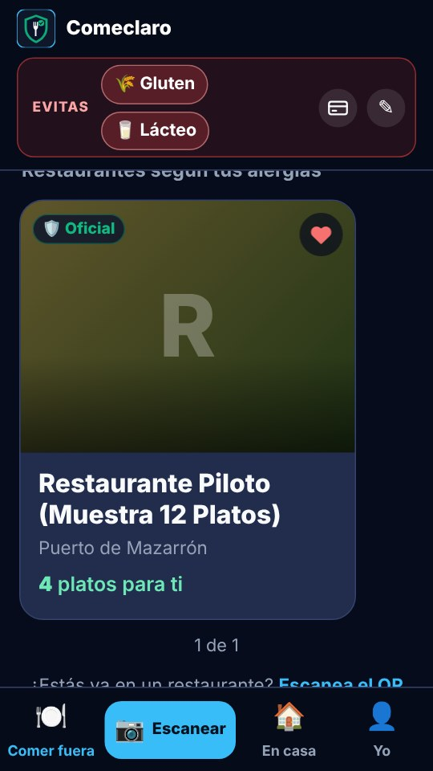
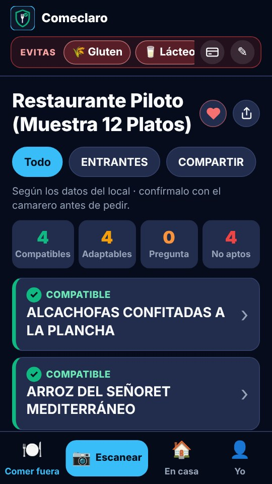
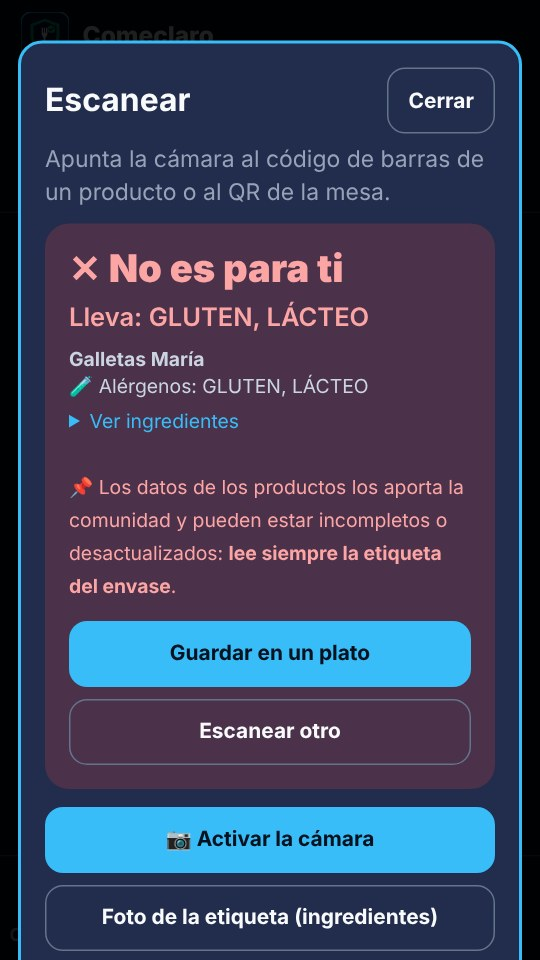

Come fuera sabiendo qué platos son para ti
Comeclaro es la aplicación para personas con alergias e intolerancias alimentarias: marca lo que evitas y la carta de cada restaurante se ordena sola en compatibles, adaptables y no aptos, con el motivo.
Ejemplo de carta para una persona celíaca.
Tu perfil, en tu móvil
Los 14 alérgenos del Reglamento europeo, tu dieta y lo que te sienta mal. No hace falta cuenta y no se envía a ningún servidor.
La carta del local
Desde el QR de la mesa, el mapa o la lista de restaurantes. La publica y la mantiene el propio restaurante.
Plato a plato
Ingredientes, trazas, freidoras y planchas compartidas, y lo que dice el nombre del plato. Todo cuenta.
La app
Así se ve en tu móvil



Lo que una lista de alérgenos no te dice
Freidoras y planchas
Si las patatas se fríen en el mismo aceite que el pescado rebozado, lo sabrás. Y si hay otra freidora libre, te dice cuál pedir.
Trazas a tu medida
Tú decides si las trazas te bloquean un plato o solo quieres el aviso.
Más que los 14 alérgenos
Dieta vegana, vegetariana, sin cerdo o para el embarazo, y cualquier alimento que añadas, con su familia: pimiento, pimentón, guindilla, lactosa, sal, níquel…
Para restaurantes
Atiende mejor a quien tiene alergias, sin complicarte
Carta con una foto (próximamente)
Haz fotos de tu carta y la app propondrá los platos con sus alérgenos. Tú revisarás cada uno antes de publicarlo.
QR que no caduca
Imprímelo una vez: cuando cambias la carta, el QR muestra la nueva.
Camarero y cocina
Las alergias de la mesa en pantalla y un mensaje listo para enviar a cocina por WhatsApp.
Freidoras y opiniones
Indica qué se cocina en cada freidora o plancha, responde a las opiniones y mira las estadísticas de tu carta.
Después, 19,99 € al mes o 199,99 € al año (IVA incluido). Te avisaremos con 30 días de antelación y nunca se cobra sin que te suscribas.
En casa
En el súper y en tu cocina, la app
Escanea el código de barras o la etiqueta de un producto y te dice si encaja con tu perfil. Guarda tus platos caseros y tu lista de la compra.
La información de cada carta la publica el restaurante. Comeclaro es una ayuda orientativa: avisa siempre de tus alergias al personal del local y confírmalas antes de pedir. Si tu alergia es grave, sigue las indicaciones de tu médico.